← 本轮 smoke 总览traex/DeepSeek-V4.1-Flash · 0034
vision-agent · 256×144 · 4.0 FPS · 20 帧 · 状态 failed · 输出 tokens 54542
原始任务Static locked-off single-shot with fixed frame throughout filmed with constant framerate in real-time. The scene shows a realistic scientific demonstration. The scene only contains the described setup and actions. A row of colorful wooden blocks has been lined up on a wooden table next to a black platform. The wooden stick attached to the black platform rotates clockwise and hits the first block.
尚无格式正确的 RGB 视频；保留真实执行状态。
已保存候选与代码修改
这里按时间展示外部捕获的候选，每份均可单独播放。保存新版本不等于完成视觉检查；下方工具证据记录实际看过的图。
可观测工具行为
命令 1 · 2026-11-09T00:00:49.986303+00:00/bin/bash -c "pwd && rg --files -g '"'!first_frame.png'"'"
exit 0 命令 2 · 2026-11-09T00:00:50.279203+00:00/bin/bash -c 'cat GENERATION_RULES.md'
exit 0 命令 3 · 2026-11-09T00:00:50.685635+00:00/bin/bash -c 'cat prompt.txt && file first_frame.png && identify first_frame.png 2>/dev/null || true'
exit 0 命令 4 · 2026-11-09T00:00:52.270947+00:00/bin/bash -c "command -v ffmpeg; command -v blender; command -v python3; python3 - <<'PY'
mods=['cv2','numpy','PIL','torch','diffusers','imageio','moviepy','scipy','skimage']
for m in mods:
try:
x=__import__(m); print(m,'OK',getattr(x,'__version__',''))
except Exception as e: print(m,'NO',type(e).__name__)
PY"
exit 0 命令 5 · 2026-11-09T00:01:00.001133+00:00/bin/bash -c 'cat artifact_io.py'
exit 0 命令 6 · 2026-11-09T00:01:00.186835+00:00/bin/bash -c 'cat player_template.html'
exit 0 命令 7 · 2026-11-09T00:01:00.685250+00:00/bin/bash -c "python3 - <<'PY'
from PIL import Image
im=Image.open('first_frame.png')
print(im.mode, im.size)
im.resize((1024,576)).save('.tmp/first_frame_4x.png')
PY"exit 0 命令 8 · 2026-11-09T00:01:08.368975+00:00/bin/bash -c "python3 - <<'PY'
from PIL import Image
im=Image.open('first_frame.png')
for name,box,scale in [('blocks',(35,45,195,135),6),('platform',(130,20,235,100),7),('yellow',(45,55,78,133),10)]:
c=im.crop(box); c.resize((c.width*scale,c.height*scale)).save(f'.tmp/{name}.png')
PY"exit 0 命令 9 · 2026-11-09T00:01:45.832816+00:00/bin/bash -c "python3 - <<'PY'
from PIL import Image
im=Image.open('first_frame.png')
c=im.crop((150,35,210,85))
c.resize((600,500),Image.Resampling.NEAREST).save('.tmp/lever_nearest.png')
PY"exit 0 命令 10 · 2026-11-09T00:01:53.421694+00:00/bin/bash -c "python3 - <<'PY'
from PIL import Image, ImageEnhance, ImageFilter
im=Image.open('first_frame.png')
c=im.crop((140,20,232,98))
for i,(br,co) in enumerate([(2.0,1.8),(3.0,2.5)]):
x=ImageEnhance.Brightness(c).enhance(br); x=ImageEnhance.Contrast(x).enhance(co)
x.resize((920,780),Image.Resampling.NEAREST).save(f'.tmp/platform_enh{i}.png')
PY"exit 0 命令 11 · 2026-11-09T00:02:02.457548+00:00/bin/bash -c "python3 - <<'PY'
from PIL import Image, ImageEnhance
im=Image.open('first_frame.png')
c=im.crop((55,25,190,80))
for i in range(3):
x=ImageEnhance.Brightness(c).enhance([1,2.5,4][i]); x=ImageEnhance.Contrast(x).enhance([1,2,3][i])
x.resize((1080,440),Image.Resampling.NEAREST).save(f'.tmp/bridge{i}.png')
PY"exit 0 命令 12 · 2026-11-09T00:02:20.124069+00:00/bin/bash -c "python3 - <<'PY'
import cv2, numpy as np
im=cv2.imread('first_frame.png')
# print colors in platform center crop around light stick
for y in range(35,70):
vals=[]
for x in range(160,190):
b,g,r=im[y,x]
if int(r)+int(g)+int(b)>250:
vals.append((x,(int(r),int(g),int(b))))
if vals: print(y,vals)
PY"exit 0 命令 13 · 2026-11-09T00:02:24.018796+00:00/bin/bash -c "python3 - <<'PY'
from PIL import Image,ImageEnhance,ImageFilter
im=Image.open('first_frame.png')
c=im.crop((160,38,191,72)).resize((620,680),Image.Resampling.NEAREST)
c=ImageEnhance.Contrast(c).enhance(1.8)
c.save('.tmp/stick.png')
PY"exit 0 命令 14 · 2026-11-09T00:03:21.541089+00:00/bin/bash -c "python3 - <<'PY'
import cv2, numpy as np
im=cv2.cvtColor(cv2.imread('first_frame.png'),cv2.COLOR_BGR2RGB)
boxes={'yellow':(45,62,70,132),'red':(79,60,102,127),'pink':(103,57,127,126),'green':(127,55,150,124),'blue':(149,53,171,121),'purple':(167,47,191,110)}
for n,(x0,y0,x1,y1) in boxes.items():
p=im[y0:y1,x0:x1].reshape(-1,3)
# top frequency quantized
q=(p//8*8)
u,c=np.unique(q,axis=0,return_counts=True)
ix=np.argsort(c)[-12:][::-1]
print(n,[(tuple(u[i]),int(c[i])) for i in ix[:8]])
PY"exit 0 命令 15 · 2026-11-09T00:03:27.119257+00:00/bin/bash -c "python3 - <<'PY'
from PIL import Image
im=Image.open('first_frame.png')
# pixel perfect upscale whole
im.resize((1536,864),Image.Resampling.NEAREST).save('.tmp/first_nearest.png')
PY"exit 0 命令 16 · 2026-11-09T00:03:36.362509+00:00/bin/bash -c "python3 - <<'PY'
from PIL import Image,ImageDraw,ImageFont
im=Image.open('first_frame.png').resize((1024,576),Image.Resampling.NEAREST)
d=ImageDraw.Draw(im)
for x in range(0,256,10):
X=x*4; d.line((X,0,X,576),fill=(255,0,255),width=1); d.text((X+2,2),str(x),fill=(255,255,255))
for y in range(0,144,10):
Y=y*4; d.line((0,Y,1024,Y),fill=(0,255,255),width=1); d.text((2,Y+2),str(y),fill=(255,255,255))
im.save('.tmp/grid.png')
PY"exit 0 命令 17 · 2026-11-09T00:04:16.929910+00:00/bin/bash -c "python3 - <<'PY'
import cv2,numpy as np
im=cv2.imread('first_frame.png'); hsv=cv2.cvtColor(im,cv2.COLOR_BGR2HSV)
# hue OpenCV
regions={'yellow':(40,55,80,140),'red':(75,55,110,130),'pink':(100,50,135,130),'green':(122,45,160,130),'blue':(145,40,180,125),'purple':(160,40,200,115)}
for n,(x0,y0,x1,y1) in regions.items():
h,s,v=cv2.split(hsv[y0:y1,x0:x1])
mask=(s>90)&(v>35)
ys,xs=np.where(mask)
if len(xs):
print(n,'bbox',x0+xs.min(),y0+ys.min(),x0+xs.max(),y0+ys.max(),'count',len(xs),'hue',np.median(h[mask]))
PY"exit 0 命令 18 · 2026-11-09T00:04:21.643381+00:00/bin/bash -c "python3 - <<'PY'
import cv2,numpy as np
im=cv2.imread('first_frame.png'); hsv=cv2.cvtColor(im,cv2.COLOR_BGR2HSV)
for name,(x0,y0,x1,y1) in {'y':(45,60,73,132),'r':(79,58,105,128),'p':(103,55,130,126),'g':(127,53,153,125),'b':(149,51,174,122),'u':(166,45,193,112)}.items():
p=im[y0:y1,x0:x1]
h,s,v=cv2.split(hsv[y0:y1,x0:x1])
for th in [120,150,180]:
mask=s>th
if mask.sum(): print(name,th,'count',mask.sum(),'hsv med',np.median(h[mask]),np.median(s[mask]),np.median(v[mask]))
PY"exit 0 命令 19 · 2026-11-09T00:04:44.079014+00:00/bin/bash -c "python3 - <<'PY'
from PIL import Image
im=Image.open('first_frame.png')
boxes={'yellow':(42,52,75,140),'red':(76,52,108,134),'pink':(99,50,132,132),'green':(122,47,156,130),'blue':(145,44,178,127),'purple':(163,40,198,118)}
for n,b in boxes.items():
c=im.crop(b); c.resize((c.width*12,c.height*12),Image.Resampling.NEAREST).save(f'.tmp/b_{n}.png')
PY"exit 0 命令 20 · 2026-11-09T00:04:53.388493+00:00/bin/bash -c "python3 - <<'PY'
import cv2,numpy as np
im=cv2.cvtColor(cv2.imread('first_frame.png'),cv2.COLOR_BGR2RGB)
for y in [55,60,70,80,90,100,110,120,125,130]:
print('y',y)
for x in [47,50,55,60,65,68,80,85,90,95,105,110,115,120,128,132,136,140,150,154,158,163,168,175,180,185]:
r,g,b=im[y,x]
# report saturated-ish
if max(r,g,b)-min(r,g,b)>40: print(x,(int(r),int(g),int(b)),end=';')
print()
PY"exit 0 命令 21 · 2026-11-09T00:04:57.532618+00:00/bin/bash -c "python3 - <<'PY'
import cv2,numpy as np
im=cv2.imread('first_frame.png'); hsv=cv2.cvtColor(im,cv2.COLOR_BGR2HSV)
ranges={'yellow':((20,120,80),(40,255,255)),'red':((0,130,80),(15,255,255)),'pink':((0,40,100),(20,220,255)),'green':((35,80,20),(85,255,160)),'blue':((90,100,50),(115,255,255)),'purple':((120,60,30),(165,255,180))}
for n,(lo,hi) in ranges.items():
m=cv2.inRange(hsv,np.array(lo),np.array(hi))
ys,xs=np.where(m>0)
print(n,len(xs), (xs.min(),ys.min(),xs.max(),ys.max()) if len(xs) else None)
PY"exit 0 命令 22 · 2026-11-09T00:05:01.428841+00:00/bin/bash -c "python3 - <<'PY'
import cv2,numpy as np
im=cv2.imread('first_frame.png'); hsv=cv2.cvtColor(im,cv2.COLOR_BGR2HSV)
# print hue around red bbox
for y in [60,70,80,90,100,110,120]:
print(y,[(x,tuple(int(v) for v in hsv[y,x])) for x in range(76,105,4)])
PY"exit 0 命令 23 · 2026-11-09T00:05:20.341041+00:00/bin/bash -c "python3 - <<'PY'
from PIL import Image,ImageEnhance
im=Image.open('first_frame.png')
c=im.crop((150,42,190,70))
for r in ['nearest','bicubic','lanczos']:
rs={'nearest':Image.Resampling.NEAREST,'bicubic':Image.Resampling.BICUBIC,'lanczos':Image.Resampling.LANCZOS}[r]
x=c.resize((800,560),rs)
x=ImageEnhance.Contrast(x).enhance(1.3)
x.save(f'.tmp/lever_{r}.png')
PY"exit 0 命令 24 · 2026-11-09T00:05:26.397517+00:00/bin/bash -c "python3 - <<'PY'
from PIL import Image
im=Image.open('first_frame.png')
c=im.crop((162,30,190,68)).resize((560,760),Image.Resampling.NEAREST)
c.save('.tmp/lever2.png')
PY"exit 0 命令 25 · 2026-11-09T00:05:32.959425+00:00/bin/bash -c "python3 - <<'PY'
import cv2,numpy as np
im=cv2.imread('first_frame.png'); hsv=cv2.cvtColor(im,cv2.COLOR_BGR2HSV)
# print pixels center crop RGB and HSV where r high
for y in range(34,66):
for x in range(160,190):
b,g,r=im[y,x]; h,s,v=hsv[y,x]
if (int(r)+int(g)+int(b)>210) and max(b,g,r)>90:
print(x,y,(int(r),int(g),int(b)),(int(h),int(s),int(v)))
PY"exit 0 命令 26 · 2026-11-09T00:05:36.665096+00:00/bin/bash -c "python3 - <<'PY'
from PIL import Image
im=Image.open('first_frame.png')
# color block at 162, 32 etc
for y in range(25,50):
print(y, im.getpixel((170,y)), im.getpixel((180,y)), im.getpixel((183,y)))
PY"exit 0 命令 27 · 2026-11-09T00:05:40.926546+00:00/bin/bash -c "python3 - <<'PY'
import cv2,numpy as np
im=cv2.imread('first_frame.png'); hsv=cv2.cvtColor(im,cv2.COLOR_BGR2HSV)
for n,(x0,y0,x1,y1) in {'y':(46,55,72,135),'r':(80,55,100,130),'p':(104,52,126,130),'g':(128,50,151,128),'b':(150,47,172,125),'u':(167,43,193,116)}.items():
h,s,v=cv2.split(hsv[y0:y1,x0:x1]); mask=(s>120)
print(n, 'med',np.median(h[mask]),np.median(s[mask]),np.median(v[mask]), 'minmax',h[mask].min(),h[mask].max())
PY"exit 0 命令 28 · 2026-11-09T00:05:44.856774+00:00/bin/bash -c "python3 - <<'PY'
import cv2,numpy as np
im=cv2.imread('first_frame.png'); hsv=cv2.cvtColor(im,cv2.COLOR_BGR2HSV)
for y in [50,55,60,70,80,90,100,110,120,130]:
print('y',y, 'pink:', [(x,tuple(int(q) for q in hsv[y,x])) for x in range(103,128,4)])
PY"exit 0 命令 29 · 2026-11-09T00:06:14.746016+00:00/bin/bash -c "python3 - <<'PY'
import cv2,numpy as np
from PIL import Image
im=cv2.imread('first_frame.png')
crop=im[20:90,140:230]
# sat and gradient
hsv=cv2.cvtColor(crop,cv2.COLOR_BGR2HSV)
s=hsv[:,:,1]; v=hsv[:,:,2]
# emphasize values >30 but low sat (metal) via CLAHE
lab=cv2.cvtColor(crop,cv2.COLOR_BGR2LAB); l,a,b=cv2.split(lab); l=cv2.createCLAHE(clipLimit=4,tileGridSize=(4,4)).apply(l); out=cv2.cvtColor(cv2.merge([l,a,b]),cv2.COLOR_LAB2BGR)
cv2.imwrite('.tmp/platform_clahe.png',cv2.resize(out,None,fx=10,fy=10,interpolation=cv2.INTER_NEAREST))
# edges overlay
edge=cv2.Canny(crop,25,60); base=cv2.resize(crop,None,fx=10,fy=10,interpolation=cv2.INTER_NEAREST); e=cv2.resize(edge,None,fx=10,fy=10,interpolation=cv2.INTER_NEAREST); base[e>0]=(0,255,0); cv2.imwrite('.tmp/platform_edges.png',base)
PY"exit 0 命令 30 · 2026-11-09T00:06:30.472688+00:00/bin/bash -c "python3 - <<'PY'
from PIL import Image
im=Image.open('first_frame.png')
# average rows y=50..58 and x=60..160 grayscale? print color each 5 px
for y in range(48,60):
print(y,[im.getpixel((x,y)) for x in range(60,166,10)])
PY"exit 0 命令 31 · 2026-11-09T00:06:34.539131+00:00/bin/bash -c "python3 - <<'PY'
import cv2,numpy as np
im=cv2.imread('first_frame.png'); hsv=cv2.cvtColor(im,cv2.COLOR_BGR2HSV)
# inspect metal-ish low saturation high-ish light in platform crop
for y in range(25,68,2):
vals=[]
for x in range(145,205,2):
b,g,r=im[y,x]; h,s,v=hsv[y,x]
if s<45 and v>65: vals.append((x,int(v),int(s)))
if vals: print(y,vals)
PY"exit 0 命令 32 · 2026-11-09T00:06:38.506836+00:00/bin/bash -c "python3 - <<'PY'
from PIL import Image
im=Image.open('first_frame.png')
# platform bbox with only mild enhance
im.crop((145,20,225,80)).resize((1200,900),Image.Resampling.NEAREST).save('.tmp/platform_raw.png')
PY"exit 0 命令 33 · 2026-11-09T00:06:44.671748+00:00/bin/bash -c "python3 - <<'PY'
from PIL import Image,ImageEnhance
im=Image.open('first_frame.png')
c=im.crop((155,38,180,65)).resize((750,810),Image.Resampling.NEAREST)
c=ImageEnhance.Brightness(c).enhance(1.8)
c=ImageEnhance.Contrast(c).enhance(2)
c.save('.tmp/core_enh.png')
PY"exit 0 视觉工具实际返回图片 1
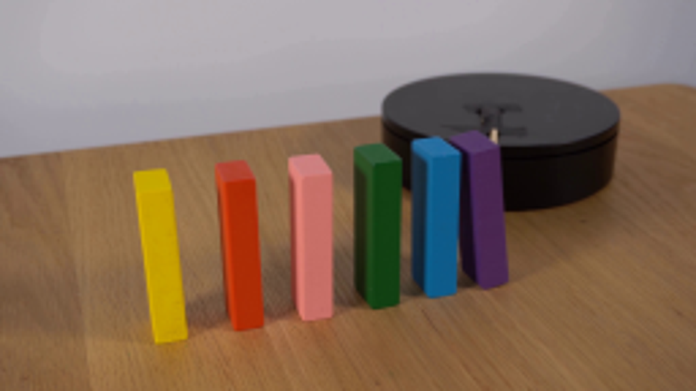
视觉工具实际返回图片 2
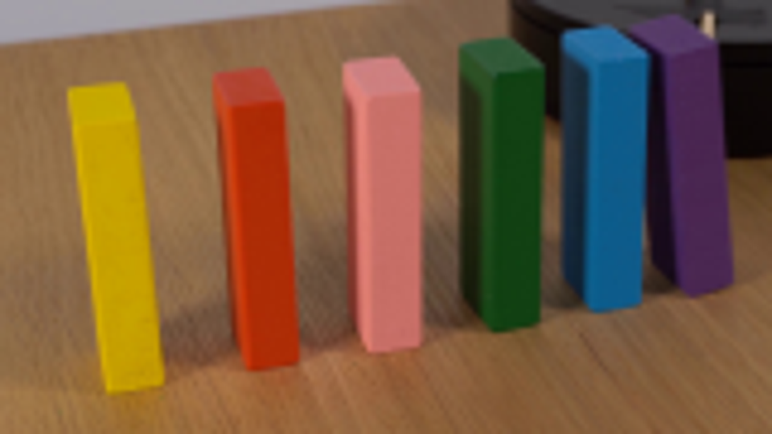
视觉工具实际返回图片 3
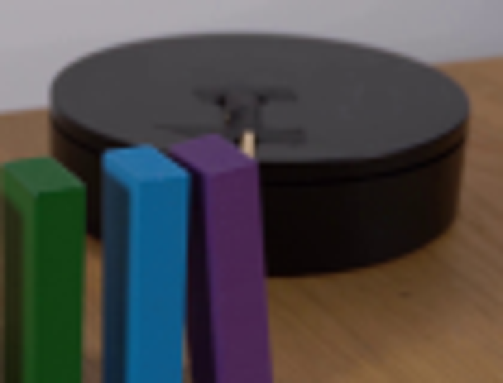
视觉工具实际返回图片 4
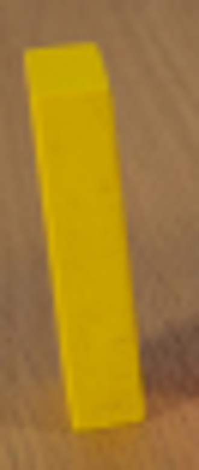
视觉工具实际返回图片 5
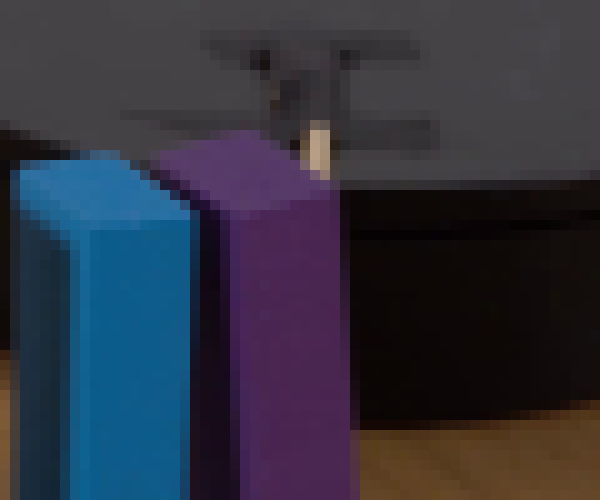
视觉工具实际返回图片 6
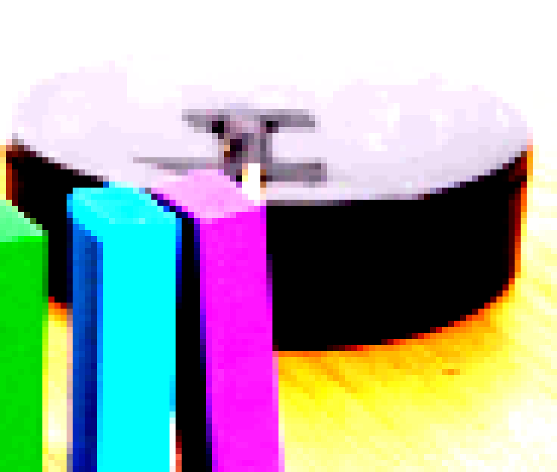
视觉工具实际返回图片 7
视觉工具实际返回图片 8
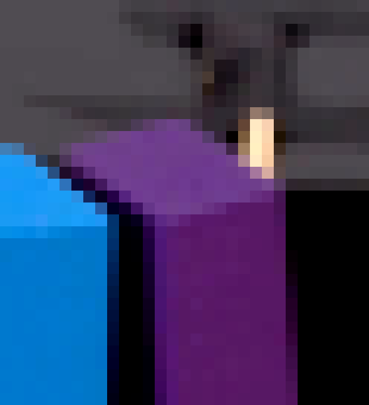
视觉工具实际返回图片 9
视觉工具实际返回图片 10
视觉工具实际返回图片 11
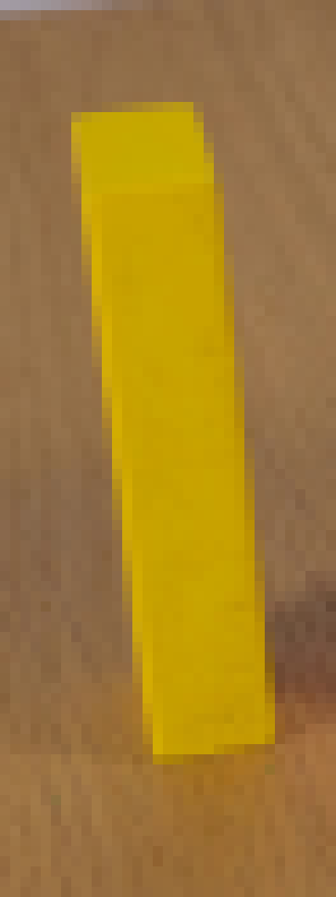
视觉工具实际返回图片 12
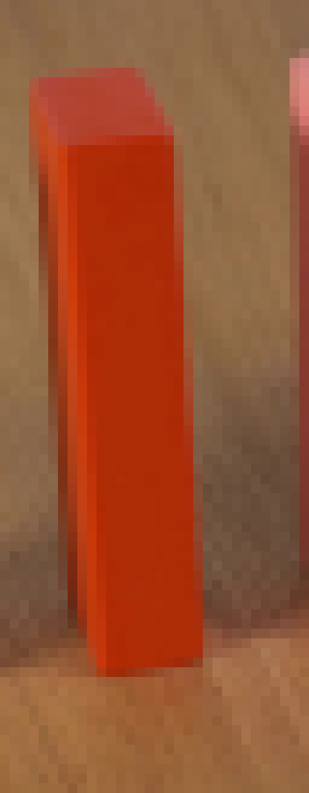
视觉工具实际返回图片 13
视觉工具实际返回图片 14
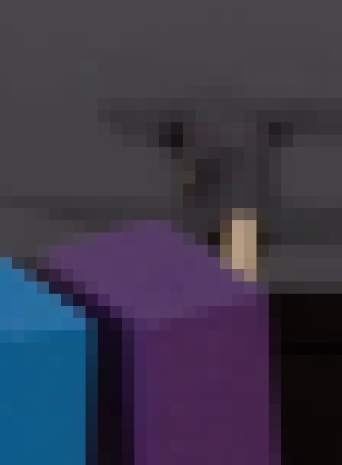
视觉工具实际返回图片 15
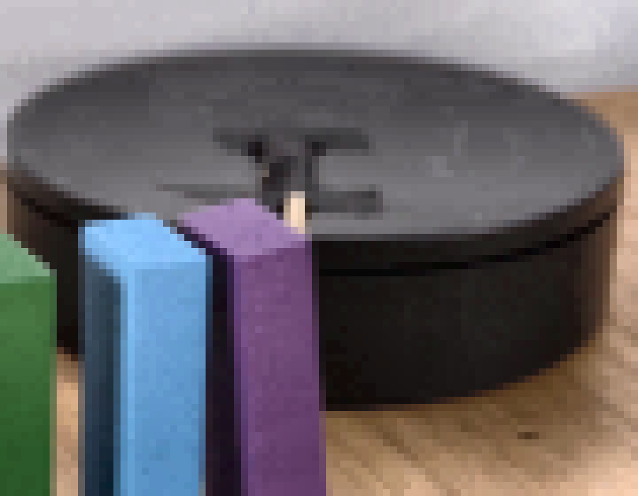
视觉工具实际返回图片 16
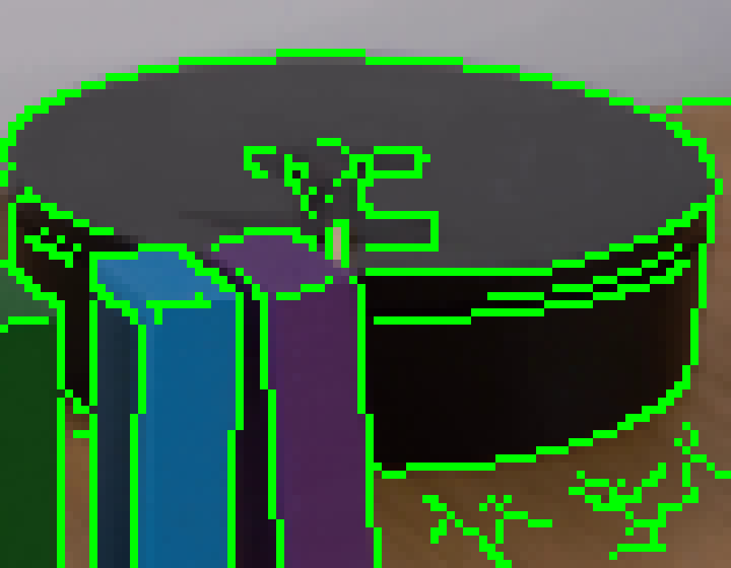
视觉工具实际返回图片 17
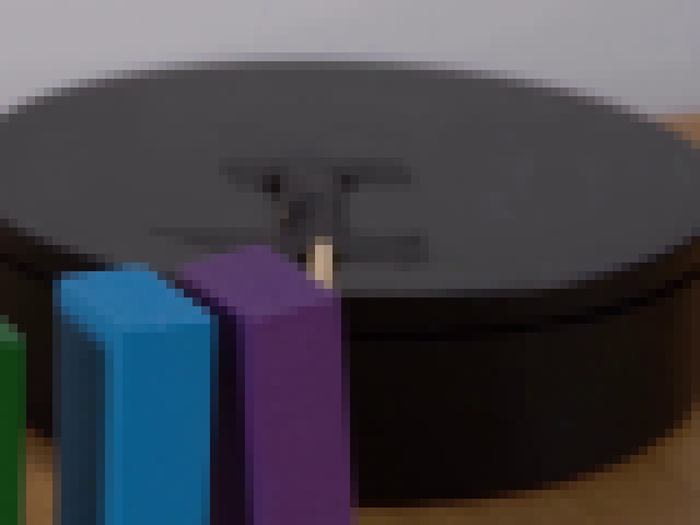
视觉工具实际返回图片 18
保存候选 0 份；完成命令 33 次；可验证图片返回 18 张。原始 API 响应与完整日志保留在本地。